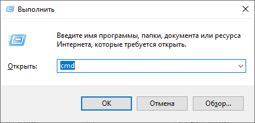
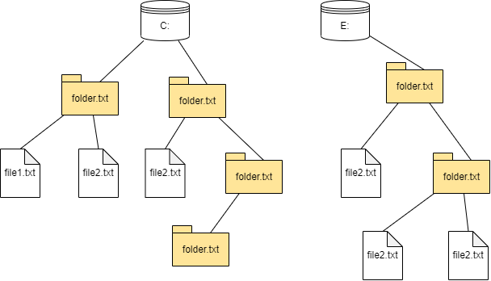

Работа в командной строке
Работа в командной строке
Работа в командной строке
Интерфейс — средство взаимодействия пользователя с программой.
Пользовательский интерфейс (UI, user's interface), интерфейс, обеспечивающий передачу информации между пользователем-человеком и программно-аппаратными компонентами компьютерной системы.
Графический интерфейс (GUI, graphic UI), это форма пользовательского интерфейса, которая позволяет пользователям взаимодействовать с устройством с помощью графических элементов (значков, курсоров, кнопок).
Интерфейс командной строки (CLI, command line interface), позволяет управлять работой программ посредством ввода команд и получать информацию в текстовом виде.
В данном разделе будет рассмотрен только интерфейс командной строки.

Командная строка или консоль или терминал, является средством, позволяющим использовать
интерфейс командной строки. Здесь происходит ввод команд и данных, а также вывод данных
программами.
Для открытия консоли необходимо нажать Win+R, откроется окно, показанное на картинке,
набрать имя команды cmd и нажать Enter. Откроется окно следующего вида:
C:\Users\user1>Перед каждой командой будет стоять знак >(в Linux и Mac OS — $). То, что написано до
знака $ или >, плюс сам знак, всё вместе называется приглашением командной строки.
Как правило, оно включает адрес текущего каталога (будет рассмотрено далее).
В консоли вводятся команды или вызываются программы, которые могут выводить сообщения и другую информацию в эту же консоль. Также программы могут запрашивать пользовательский ввод в консоли. Помимо этого программы могут выполнять другие действия, например, чтение файлов и запись в файлы, а также открывать графические окна.
Большинство программ и команд, выполняемых в командной строке, предназначены для работы с файлами и каталогами, поэтому следует более подробно рассмотреть что это такое.
Устройства хранения данных (флешки, жесткие диски и др.)сохраняют данные используя особенности физического процесса воздействия (намагничивание и т.д.). Контроллеры этих устройств предоставляет низкоуровневый доступ к данным, например используя физическую адресацию. Конечному пользователю с таким представлением данных работать не удобно. Поэтому были разработаны специальные программы, которые трансформируют это представление в более удобный и унифицированный (единообразный) вид.

На схеме представлено пользовательское представление данных, хранящихся на устройстве хранения. Элементы данного представления:
логический диск, который обозначается буквами с двоеточиями: С:, D:. Одно физическое
устройство может быть логически разбито на части.
файлы (англ. file) — именованная область на носителе данных, используемая как базовый объект взаимодействия с данными в операционных системах.
папки или директории или каталоги, это средство логической группировки файлов. Папки могут "содержать" файлы и другие папки, таким образом формируется "древовидная" (иерархическая) структура.
Логический диск представляется корневым элементом древовидной структуры и называется корневым каталогом.
Для указания файла в этой структуре используется путь к файлу, который предоставляет перечисление
всех узлов (каталогов) дерева от корневого каталога до данного файла, включая данный файл. Узлы
перечисляют через \(в ОC Linux и Mac — через /), например:
С:\folder1\folder2\folder3\file2.txtгде С:\ — это корневой каталог диска. Данный путь является абсолютным, потому что начинается с
корневого каталога.
Текущий каталог — это каталог, который выбран в качестве текущего в рамках текущего контекста
выполнения программы (например, окна терминала). Пути относительно текущего каталога называются
относительным. Например, при текущем каталоге С:\folder1, относительный путь к
представленному выше файлу будет folder2\folder3\file2.txt.
Помимо текущего каталога в рамках текущего контекста также определен текущий диск. Смена текущего каталога и текущего диска будет рассмотрена ниже.
Для выполнения команды в консоли вводят:
.bat и .exe можно не вводить);Note
Передавать аргументы программе можно даже в том случае, если программа никаких аргументов не принимает. Переданные аргументы скорее всего будут проигнорированы.
>mkdir test_dir
>cd test_dir
>mkdir "test dir"
>dir
. . .
01.03.2023 22:04 <DIR> .
01.03.2023 22:04 <DIR> ..
01.03.2023 22:04 <DIR> test dir
. . . Первый пример показывает выполнение команды mkdir с аргументом test_dir. Второй пример
аналогичен, только используется команда cd. В третьем примере строка аргумента содержит пробел,
поэтому требуется заключить эту строку с пробелом в кавычки (кавычки частью строки аргумента не
являются), иначе это будет воспринято как два
аргумента. В четвертом примере выполняется команда dir без аргументов. Эта команда, в отличии от
предыдущих команд, выводит какую-то информацию в консоль.
В приведенных примерах демонстрируется только процесс выполнения команд. Выполняемые при этом действия нас сейчас не интересуют.
Все команды Windows можно разделить на две большие группы:
bat, exe и некоторыми другими), эти файлы могут быть
частью ОС Windows, либо установлены отдельно. Многие стандартные команды и программы ОС Windows имеют аргумент /?, например:
>cd /?
Displays the name of or changes the current directory.
CHDIR [/D] [drive:][path]
CHDIR [..]
CD [/D] [drive:][path]
CD [..]
.. Specifies that you want to change to the parent directory.
. . .Данная команда вывела справочную информацию о команде cd. В первой строке дается краткое описание
выполняемых командой действий. Далее перечислены варианты использования (аргументы).
Для смены текущего диска следует ввести имя этого диска с двоеточием:
C:\Users1>E:
E:\>Как показывает подсказка командной строки, до выполнения команды E: текущим диском был C:.
cd — смена текущего каталогаcd означает "change directory" (сменить каталог).
C:\Users1\test_dir>cd "test dir"
C:\Users1\test_dir\test dir>В данном примере мы выполнили переход в подкаталог текущего каталога используя относительный путь.
Также были использованы кавычки, потому что имя указанный путь содержит пробел. Для перехода на
уровень выше (в надкаталог) используется путь ...
C:\Users1\test_dir\test dir>cd ..
C:\Users1\test_dir>Полезным параметром является ключ /d, который позволяет сменить не только каталог, но и диск.
C:\Users1\test_dir>cd /d E:\python
E:\python>Команда cd без аргументов печатает путь к текущему каталогу.
E:\python>cd
E:\python
E:\python>dir — просмотр содержимого каталогаC:\Users1\test_dir>dir
Volume in drive C has no label.
Volume Serial Number is EDC2-A21E
Directory of C:\Users1\test_dir
01.03.2023 23:30 <DIR> .
01.03.2023 23:30 <DIR> ..
01.03.2023 23:36 69 cd.bat
01.03.2023 22:04 <DIR> test dir
1 File(s) 69 bytes
3 Dir(s) 79 989 538 816 bytes freeДанный пример показывает что в текущем каталоге находится подкаталог test_dir (помечен
как <DIR>),
а также файл cd.bat размером 69 байт. Важно отметить что команда dir показывает также
псевдокаталоги:
. — это указатель на текущий каталог;.. — это указатель на родительский каталог.Полезным аргументом является /b, который выводит список каталогов без дополнительной информации.
C:\Users1\test_dir>dir /b
cd.bat
test dirПеременные окружения (англ. environment variables) — это переменные, установленные в операционной системе (ОС) и доступные всем программам. Значениями этих переменных могут быть только строки. Пример:
>set CAT_NAME=Федор
>echo кот %CAT_NAME%
кот ФедорКоманда командной строки set устанавливает переменную окружения с именем CAT_NAME и значением
Федор. Интерпретатор командной строки распознает указания переменных (в ОС Windows они
заключаются в символы %) и заменяет их на соответствующие значения.
Note
В ОС Windows имена переменных окружения являются регистронезависимыми , т.е. команда
echo кот %cat_name% будет иметь такой же результат.
В ОС Linux переменные окружения регистрозависимы, т.е. CAT_NAME и cat_name это разные
переменные. Формат указания переменных такой: $CAT_NAME или ${CAT_NAME}.
В большинстве случаев принято задавать имена переменных окружения полностью в верхнем регистре.
Различные языки программирования как правило имеют те или иные команды "печати". Например в языке
Python это команда print(). Эти команды печати на самом деле выводят текст в так называемый
стандартный поток вывода. По умолчанию этот поток направлен в консоль, однако он может быть
перенаправлен:
Рассмотрим пример:
>cd
C:\Users1\test_dir
>cd > current_dir.txt
>type current_dir.txt
C:\Users1\test_dir
Как мы видим команда cd по умолчанию выводит данные в консоль. Директива перенаправления вывода
> предписывает записать эти данные в фай (если такой файл уже существует, то он будет перезаписан).
Команда type просто выводит содержимое файла в консоль.
Директива >> позволяет дописать существующий файл.
>echo la-la-la >> current_dir.txt
>type current_dir.txt
C:\Users1\test_dir
la-la-laЗдесь команда echo печатает заданный текст в стандартный поток вывода, который перенаправляется
в файл с дописыванием. Если >> заменить на >, то файл перезапишется:
>echo la-la-la > current_dir.txt
>type current_dir.txt
la-la-laКоманда input() в языке Python реализует стандартный ввод программы, который по умолчанию
осуществляется из консоли (клавиатуры), но может быть выводом другой программы. Например:
>dir /b
cd.bat
current_dir.txt
test dir
>dir /b | find "_"
current_dir.txtКоманда dir и данном случае выводит три элемента каталога. Команда find может принимать
через стандартный вход набор строк и выводить только те из них, в которых имеется указанная
подстрока, в данном случае "_". Перенаправление стандартного ввода из файла задается директивой
<:
>find "a" < current_dir.txt
la-la-la
>find "o" < current_dir.txt
>С помощью перенаправления потока ввода/вывода можно собирать цепочки команд:
>dir /b | find "_" > list.txt
>type list.txt
current_dir.txtЗдесь команда dir передает свой вывод команде find, которая вместо вывода в консоль записывает
результаты своей работы в файл.
Программа может принимать многострочные входные данные из стандартного потока ввода (с клавиатуры или из файла). Например может быть такая программа на языке Python:
while True:
i = int(input())
if i < 10:
continue
elif i > 100:
break
print(i)При небольшом количестве данных запуск такой программы может выполняться следующим образом:
>(echo 9 & echo 30 & echo 20 & echo 101) | python process_input.py
30
20Также протестируем данный метод с использованием встроенной команды find:
>(echo a & echo b) | find "b"
b